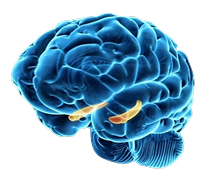

Dopamina
substância que o cérebro libera quando sentimos prazer. Ela ensina a repetir.
Spanemberg, PUC-RSA dopamina empurra para apostar de novo, e a parte do cérebro que deveria segurar perde força.
substância que o cérebro libera quando sentimos prazer. Ela ensina a repetir.
Spanemberg, PUC-RScircuito do cérebro que diz “foi bom, faz de novo”.
Spanemberg, PUC-RSregião atrás da testa que decide e segura impulsos.
Vinícius Andrade, ABPnome médico do vício em apostas, também chamado de ludopatia.
DSM-5Uma situação agradável solta uma dose de dopamina. Comportamentos que viciam soltam muito mais, e o cérebro passa a querer repetir.
Escala ilustrativa do psiquiatra Lucas Spanemberg (PUC-RS), não uma medição.

Esquema simplificado e fora de escala.
Não é falta de caráter: é um transtorno do cérebro. Procure um psicólogo ou psiquiatra.